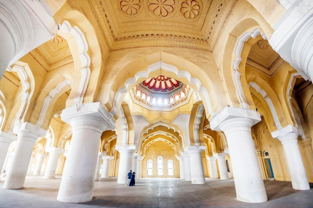

Madurai The Athens of the East

History
Madurai is one of the oldest continuously inhabited cities in the world, with a history dating back more than 2,500 years. It was the capital of the Pandyan dynasty.
Language
Tamil, English
Famous Food
Kari Dosa, Kothu Parotta, Madurai Halwa
About Madurai
Madurai is one of the oldest cities in Tamil Nadu, with a rich cultural heritage spanning over two millennia. It is well known for its rich culture, history, and famous temples, particularly the Meenakshi Amman Temple.
The city is built around the Meenakshi Amman Temple, which acts as the geographical and ritual center. Madurai was an important center of trade and learning, with Roman and Greek connections evident from archaeological findings.
Why Visit Madurai?
Ancient History
Experience one of the world's oldest continuously inhabited cities
Famous Temples
Home to magnificent Dravidian architecture and spiritual sanctuaries
Rich Culture
Experience traditional Tamil culture, music, and festivals
Local Markets
Famous for Sungudi sarees, spices, and antique brass lamps
- Ancient historical city with 2500+ years of heritage
- Famous temples with intricate stone carvings
- Traditional Tamil culture and festivals
- UNESCO World Heritage tentative sites
Important Places

Meenakshi Amman Temple
Iconic temple with 14 towering gopurams and 1000-pillar hall

Thirumalai Nayakkar Palace
17th-century palace blending Dravidian and Islamic styles

Gandhi Memorial Museum
Rare artifacts and historical exhibits from freedom struggle
Vaigai River
Lifeline of Madurai, perfect for evening walks and boat rides

Koodal Azhagar Temple
Ancient Vishnu temple with beautiful sculptures and architecture

Thirumalai Nayakkar Mahal
Grand palace with impressive architecture and light & sound show
Visitor Information
Best Time to Visit
October to March when weather is pleasant and cool
How to Reach
Airport: Madurai International (IXM)
Railway: Madurai Junction
Stay Options
Heritage hotels, resorts, and budget accommodations
Tourist Helpline
+91 452 123 4567
Current Weather
Explore Madurai on Map
📍 Click markers – each place name has a unique bright color. Use the search bar above to find any place.